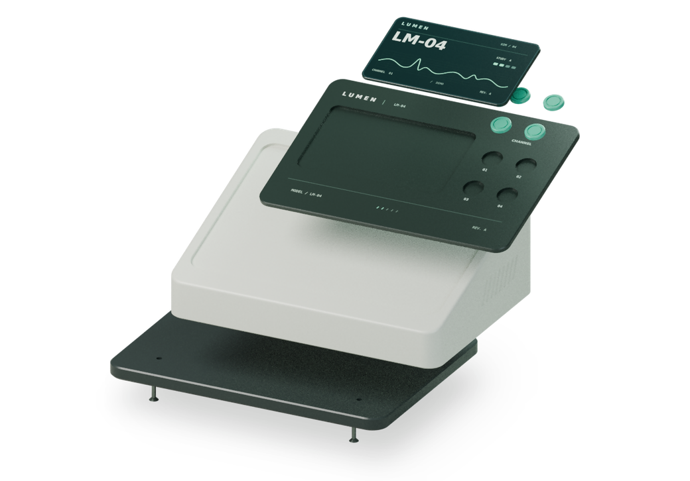

Люмен.
Цифровой стенд аппарата
для лазерной абляции
Исследуйте конструкцию в 3D и проверьте работу пульта. По этим же моделям можно собрать демонстрационный макет без излучения.
Симулятор пульта.
Включите каналы и запустите сеанс. График показывает условную индикацию, все действия записываются в журнал.
Каналы
Задайте уровень индикации.
Журнал сеанса 0
Сборка макета.
Восемь печатных деталей образуют настольный пульт. Наклонная панель и четыре глухие метки воспроизводят компоновку устройства.

LM–04 / СБОРОЧНЫЙ ВИДФайлы для мастерской
Геометрия проверена в CAD. Физическую сборку и посадки предстоит подтвердить на первом отпечатке.
Исходная задача и аналоги
Исходная задача — изучить управление аппаратом абляции с несколькими световодами. В этой ревизии исследуются расположение органов управления, эргономика корпуса и сценарии интерфейса. Клинические режимы, лазерный модуль и оптический тракт относятся к отдельной медицинской разработке.
В описании FiberLase S две длины волны подаются через один волоконный инструмент. У EchoLaser производитель описывает одновременную работу нескольких световодов. Для клинического применения в России предусмотрена регистрация медицинского изделия.